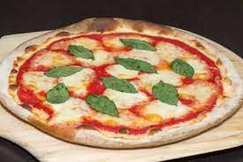
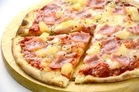

Recetas de Pizzas
Pizza Margarita
Una deliciosa pizza clásica italiana con tomate, mozzarella, albahaca y aceite de oliva.
- Masa de pizza
- Salsa de tomate
- Mozzarella rallada
- Hojas de albahaca fresca
- Aceite de oliva
- Extiende la masa de pizza sobre una bandeja para horno.
- Unta la salsa de tomate sobre la masa.
- Esparce la mozzarella rallada sobre la salsa.
- Hornea a 220°C durante 12-15 minutos o hasta que la masa esté dorada y el queso derretido.
- Decora con hojas de albahaca y rocía un poco de aceite de oliva antes de servir.
Pizza Hawaiana
Una pizza tropical con jamón, piña y queso fundido.
- Masa de pizza
- Salsa de tomate
- Jamón cocido en lonchas
- Rodajas de piña
- Mozzarella rallada
- Extiende la masa de pizza sobre una bandeja para horno.
- Unta la salsa de tomate sobre la masa.
- Agrega el jamón y las rodajas de piña sobre la salsa.
- Esparce la mozzarella rallada sobre los ingredientes.
- Hornea a 220°C durante 12-15 minutos o hasta que la masa esté dorada y el queso derretido.